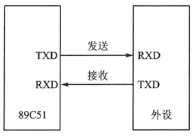
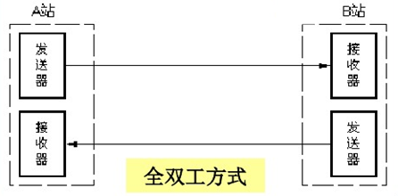
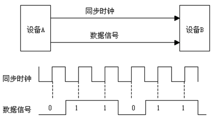
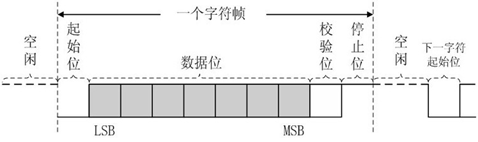
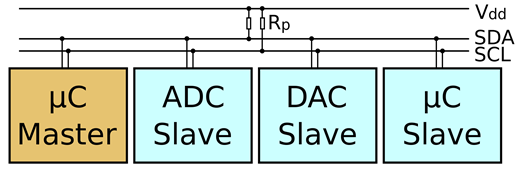
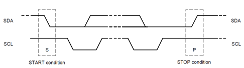
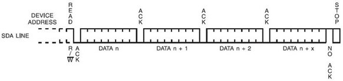
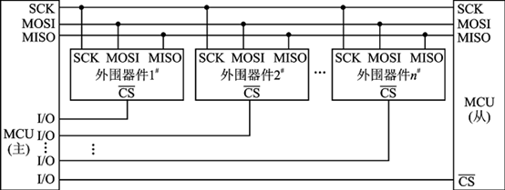

# UART / USART
# 基本方式
基本方式分并行通讯和串行通讯
# 并行通讯
并行通讯是指数据的每一位同时在多根数据线上发送或者接收。

其特点是各数据位同时传送，速度快、效率高，有多少数据位就需要多少根数据线，传送成本高。在集成电路芯片的内部、同一硬件板上各部件之间等的数据传送采用并行的方式，并行通讯传送的距离通常小于 30m。
# 串行通讯
串行通讯指数据的每一位在同一根数据线上按照顺序逐位发生或者接收。

其特点是数据按位顺序进行，最少只需要一根传输线即可完成，成本低，速度慢。计算机与远程终端、远程终端之间数据的传输同常都是串行的。
# 串行通讯与并行通讯对比
串行通讯的显著特点为：传输距离较长，可以从几米到几千米，串行通讯的通讯时钟频率较容易提高，抗干扰能力强，其信号间互相干扰可以完全忽略，但是串行通讯比并行通讯慢得多。串行通讯在数据采集和控制系统中得到了广泛的应用。

# 工作模式
串行通讯的基础是单线传输，数据通常是在两个站点之间进行传输，按照数据流的方向分为 3 种传输模式：
# 单工模式 (Simplex)
单工模式的数据是单向的，通讯双方一方为发送端，另一方则固定为接收端。信息只能沿一个方向传输，使用一根数据线。

例如收音机，只能接收发射塔给它的数据，并不能给发射塔发数据。
# 半双工模式 (Half duplex)
半双工模式是指通讯双方都具有发送器和接收器，双方既可以发射也可以接收，但是接收和发射不能同时进行。

半双工一般用数据能在两个方向传输的场合，例如对讲机。
# 全双工模式 (Full duplex)
全双工数据通讯分别由两根可以在两个不同的站点同时发送和接收的传输线进行传输数据，通讯双方能在同一时刻进行发送和接收操作。

全双工模式下，每一端都有发送器和接收器，有两条传输线可以在交互式应用场合中使用，信息传输效率高，例如手机。
# 同步方式
根据通讯的数据同步方式，可分为同步和异步两种，根据通讯过程中是否使用到时钟信号进行区分。
- 在同步通讯中，收发设备上方会使用一根信号线传输信号，在时钟信号的驱动下双方进行协调，同步数据。例如，通讯中通常双方会统一规定在时钟信号的上升沿或者下降沿对数据线进行采样。

- 在异步通讯中不使用时钟信号进行数据同步，它们直接在数据信号中穿插一些用于同步的信号位，或者将主题数据进行打包，以数据帧的格式传输数据。通讯中还需要双方规约好数据的传输速率等，以便更好地同步。

在同步通讯中，数据信号所传输的内容绝大部分是有效数据，而异步通讯中会则会包含数据帧的各种标识符，所以同步通讯效率高，但是同步通讯双方的时钟允许误差小，稍稍时钟出错就可能导致数据错乱，异步通讯双方的时钟允许误差较大。
# I2C
I2C 总线是 PHLIPS 公司在 20 世纪 80 年代推出的一种串行总线。具有引脚少，硬件实现简单，可扩展性强的优点。I2C 总线的另一优点是支持多主控，总线上任何能够进行发送 / 接收数据的设备都可以占领总线。当然，任意时间点上只能存在一个主控。
I2C 即是一种总线，也是一种通讯协议。在嵌入式开发中，通讯协议可分为两层：物理层和协议层。物理层是数据在物理媒介传输的保障；协议层主要是规定通讯逻辑，同一收发双方的数据打包、解包标准。打个比方，物理层相当于现实中的公路，而协议层则是交通规则，汽车可以在路上行驶，但是需要交通规则对行驶规则进行约束，不然将出现危险，也就是数据传输紊乱、丢包。
特性：
- 2 条双向串行线，一条数据线 SDA，一条时钟线 SCL。
SDA 传输数据是大端传输，每次传输 8bit，即一字节。 - 支持多主控 (multimastering)，任何时间点只能有一个主控。
- 总线上每个设备都有自己的一个 addr，共 7 个 bit，广播地址全 0.
- 系统中可能有多个同种芯片，为此 addr 分为固定部分和可编程部份，细节视芯片而定，看 datasheet
# 物理层
I2C 通讯系统接线图如下：

(1) 在 I2C 通讯总线上，可连接多个 I2C 通讯设备，支持多个通讯主机和多个通讯从机
(2) I2C 通讯只需要两条双向总线：串行数据线 (SDA)，串行时钟线 (SCL)。数据线用于传输数据，时钟线用于同步数据收发
(3) 每个连接到总线的设备都有一个独立的地址，主机正是利用该地址对设备进行访问
(4) SDA 和 SCL 总线都需要接上上拉电阻，当总线空闲时，两根线均为高电平。连接到总线上的任意器件输出低电平都会将总线信号拉低。即各器件的 SDA 和 SCL 都是线与的关系
(5) 多个主机同时使用总线时，需要用仲裁方式决定哪个设备占用总线，不然数据将会产生冲突
(6) 串行的 8 位双向数据传输位速率在标准模式下可达 100kbps，快速模式下可达 400kbps，高速模式下可达 3.4Mbps (目前大多数 I2C 设备还不支持高速)
# 协议层
协议层规约了通讯的起始、停止信号，数据有效性、响应、冲裁同步、地址广播等。
# I2C 位传输
数据传输：SCL 为高电平时，SDA 线若保持稳定，那么 SDA 上是在传输数据 bit。
数据改变：SCL 为低电平时，SDA 线才能改变传输的 bit。
若 SDA 发生跳变，则用来表示一个会话的开始或结束（后面讲）

# I2C 开始和结束信号
开始信号：SCL 为高电平时，SDA 由高电平向低电平跳变，开始传送数据。
结束信号：SCL 为高电平时，SDA 由低电平向高电平跳变，结束传送数据。

# I2C 应答信号
Master 每发送完 8bit 数据后等待 Slave 的 ACK。
即在第 9 个 clock，若从 IC 发 ACK，SDA 会被拉低。
若没有 ACK，SDA 会被置高，这会引起 Master 发生 RESTART 或 STOP 流程，如下所示：

# I2C 写流程
写寄存器的标准流程为：
- Master 发起 START
- Master 发送 I2C addr（7bit）和 w 操作 0（1bit），等待 ACK
- Slave 发送 ACK
- Master 发送 reg addr（8bit），等待 ACK
- Slave 发送 ACK
- Master 发送 data（8bit），即要写入寄存器中的数据，等待 ACK
- Slave 发送 ACK
- 第 6 步和第 7 步可以重复多次，即顺序写多个寄存器
- Master 发起 STOP
写一个寄存器：

写多个寄存器：

# I2C 读流程
读寄存器的标准流程为：
- Master 发起 START
- Master 发送 I2C addr（7bit）和 W 操作 0（1bit），等待 ACK
- Slave 发送 ACK
- Master 发送 reg addr（8bit），等待 ACK
- Slave 发送 ACK
- Master 发起 START
- Master 发送 I2C addr（7bit）和 R 操作 1（1bit），等待 ACK
- Slave 发送 ACK
- Slave 发送 data（8bit），即寄存器里的值
- Master 发送 ACK
- 第 9 步和第 10 步可以重复多次，即顺序读多个寄存器
- Master 发起 STOP
读一个寄存器：

读多个寄存器：

# SPI
SPI（serial peripheral interface，串行外围设备接口）总线技术是 Motorola 公司推出的一种同步串行接口。它用于 CPU 与各种外围器件进行全双工、同步串行通讯。它只需四条线就可以完成 MCU 与各种外围器件的通讯，这四条线是：串行时钟线（SCK）、主机输入 / 从机输出数据线（MISO）、主机输出 / 从机输入数据线（MOSI）、低电平有效从机选择线 CS。
当 SPI 工作时，在移位寄存器中的数据逐位从输出引脚（MOSI）输出（高位在前），同时从输入引脚（MISO）接收的数据逐位移到移位寄存器（高位在前）。发送一个字节后，从另一个外围器件接收的字节数据进入移位寄存器中。即完成一个字节数据传输的实质是两个器件寄存器内容的交换。主 SPI 的时钟信号（SCK）使传输同步。其典型系统框图如下图所示。

# 通信原理
标准的 SPI 是 4 根线，分别是 SSEL（ 片选，也写作 SCS）、 SCLK（ 时钟，也写作 SCK）、 MOSI（ 主机输出从机输入 Master Output/Slave Input） 和 MISO（ 主机输入从机输出 Master Input/Slave Output）。
- MOSI（SDO）：主器件数据输出，从器件数据输入。
- MISO（SDI）：主器件数据输入，从器件数据输出。
- SCLK ：时钟信号，由主器件产生。
- CS：从器件使能信号，由主器件控制。(CS 控制芯片是否被选中，只有片选信号为实现约定的使能信号时（高电位或地电位），对此芯片的操作才有效，这也就允许同一总线上连接多个 SPI 设备。)
SPI 串行传输，数据一位一位从 MSB 到 LSB 开始传输，产生相应的脉冲沿时，MOSI，MISO 才进行数据传输。
# 工作方式
SPI 有四种工作模式，取决于两个参数：（这两个参数其实就是控制了 CLK 这一根线，SPI 通信不像 UART 或 IIC 那样有专门的通信周期，有专门的通信起始信号和结束信号。所以 SPI 协议能够通过控制时钟信号线在没有数据交流的时候保持的状态，要么是高电平，要么是低电平）
1、 CPOL，clock polarity，译作时钟极性。
2、 CPHA，clock phase，译作时钟相位。
- CPOL 具体说明：
CPOL 用于定义时钟信号在空闲状态下处于高电平还是低电平，为 1 代表高电平，0 为低电平。 - CPHA 具体说明：
首先，在同步接口中，肯定存在一个接口时钟，用来同步采样接口上数据的。CPHA 就是用来定义数据采样在第几个边沿的，数据的采样时刻。为 1 代表第二个边沿采样，为 0 代表第一个边沿采样。
以上两个参数，总共有四种组合：
(1) CPOL=0，CPHA=0：此时空闲态时，SCLK 处于低电平，数据采样是在第 1 个边沿，也就是 SCLK 由低电平到高电平的跳变，所以数据采样是在上升沿，数据发送是在下降沿。
(2) CPOL=0，CPHA=1：此时空闲态时，SCLK 处于低电平，数据发送是在第 2 个边沿，也就是 SCLK 由高电平到低电平的跳变，所以数据采样是在下降沿，数据发送是在上升沿。
(3) CPOL=1，CPHA=0：此时空闲态时，SCLK 处于高电平，数据采集是在第 1 个边沿，也就是 SCLK 由高电平到低电平的跳变，所以数据采集是在下降沿，数据发送是在上升沿。
(4) CPOL=1，CPHA=1：此时空闲态时，SCLK 处于高电平，数据发送是在第 2 个边沿，也就是 SCLK 由低电平到高电平的跳变，所以数据采集是在上升沿，数据发送是在下降沿。

由于 SPI 没有一个统一的规范，所以在时序上描述存在一定的差异，具体以 datasheet 为准。